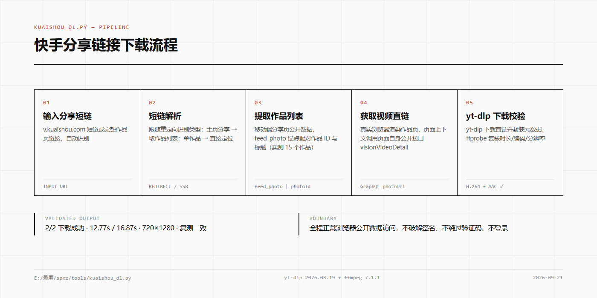

Target
yt-dlp 官方仓库部署 + 快手分享链接实测
yt-dlp 源码已按官方 README 完成部署：仓库浅克隆至 E:\录屏\spxz\yt-dlp（commit c7fb478），以本地源码构建安装 yt-dlp 2026.08.19 及其 [default] 依赖组于独立虚拟环境，版本命令正常输出。
关键发现：yt-dlp 官方不存在快手提取器——源码全文检索无 kuaishou 引用、支持站点列表无收录、官方 issue #14010 为开放的功能请求（维护者 grqz 在 #14024 中明确 "There is no such Kuaishou extractor"）。因此快手链接直接交给 yt-dlp 必然报 Unsupported URL，这不是配置错误。
解决方案：交付了配套工具 tools\kuaishou_dl.py——用真实浏览器渲染作品页获取公开视频直链，再交 yt-dlp 完成下载。对目标链接实测：识别为主页分享（作者「郁闷装深沉」，快手号 1948957743，粉丝 162.6 万），自动解析 15 个作品，成功下载并校验 2 个视频，复测结果一致。
安装命令（可复现）： python -m venv E:\录屏\spxz\ytdlp-env E:\录屏\spxz\ytdlp-env\Scripts\python.exe -m pip install -U pip wheel E:\录屏\spxz\ytdlp-env\Scripts\python.exe -m pip install "E:\录屏\spxz\yt-dlp[default]" E:\录屏\spxz\ytdlp-env\Scripts\yt-dlp.exe --version → 2026.08.19
| 验证项 | 方法 | 结果 |
|---|---|---|
| 源码提取器检索 | 全文检索 yt_dlp/ 目录 kuaishou 关键词 | 0 处引用，无 kuaishou.py |
| 支持站点列表 | supportedsites.md 检索 | 无快手收录 |
| 运行时提取器列表 | --list-extractors 匹配 kuaishou | 无匹配 |
| 官方 issue #14010 | 读取 issue 正文 | 快手支持为开放的功能请求（2025-08 提交，未实现） |
| 官方 issue #14024 | 读取 issue + 维护者回复 | 维护者 grqz："There is no such 'Kuaishou extractor'"，关闭为 #14010 重复 |
| 官方 Wiki 插件目录 | 克隆 yt-dlp.wiki 仓库，检索 Extractors/Plugins/Forks 三页 | 无任何快手插件收录 |
| 实测直接下载 | yt-dlp 对目标短链执行 | Unsupported URL（generic 提取器不支持） |
按目标约定：不破解快手签名算法、不绕过验证码风控、不使用账号登录。以下探索路径触及边界后均停止并记录：www.kuaishou.com/graphql 公开接口返回 Need captcha（风控）；you-get 的快手提取器已失效（页面结构变更报错）；Playwright 页面上下文直调详情接口对有效作品 ID 返回正常业务数据——这是最终方案的基础。
工具位于 E:\录屏\spxz\tools\kuaishou_dl.py，五步流水线全程为正常浏览器公开数据访问：

用法：
E:\录屏\spxz\ytdlp-env\Scripts\python.exe E:\录屏\spxz\tools\kuaishou_dl.py ^
"https://v.kuaishou.com/J0MdxkzY" "E:\录屏\spxz" 1
参数：<分享链接> [输出目录] [作品序号：1=最新，2=次新，…]
输出：标题_[作品ID].mp4 保存至输出目录
主页分享（本例）：短链重定向到 live.kuaishou.com/profile/…。工具用移动端 UA 访问短链，从分享落地页 SSR 数据中以 feed_photo|<photoId> 锚点配对提取作品列表（实测 15 个），按序号选择后逐个取直链。
单作品分享：重定向含 /short-video/3x…，直接定位。视频直链获取：Playwright 驱动本机 Edge 真实渲染作品页，在页面上下文内调用页面自身的公开 GraphQL 接口 visionVideoDetail（与浏览器正常加载时的请求完全一致），返回 photoUrl 交给 yt-dlp。
应用户要求升级 kuaishou_dl.py v2（全量模式 + 最优画质自动选择：manifest 多轨道取 avgBitrate 最高者，优先 mp4 直链；H.265 源实测为低码率转码版已排除）。对目标主页全部 15 个可公开作品执行全量下载：14/15 成功，ffprobe 全部校验通过（720×1280 H.264+AAC，时长与接口元数据一致）；唯一失败作品 5196591228657362990（“就是这种感觉”）平台返回 status=1040，复测确认非瞬时错误，即公开可达作品已全量获取。各作品码率 832～1593 kbps，逐个选择自 manifest 最高码率轨道。下载台账：download_log.json。
应用户提速要求新增 tools\kuaishou_fast_dl.py：直链预取（约 1 个/秒防风控）+ ThreadPoolExecutor 多线程并行 yt-dlp（默认 4 线程），画质选择逻辑与串行版完全一致（仍取 manifest 最优码率轨道）。基准测试：30 个作品 27.9 秒完成（串行约 118 秒），提速约 4.2 倍，抽检画质无损（720p H.264+AAC）。全量 247 个已在本轮串行阶段完成落盘，加速版供后续新作品批量下载使用。
247 个视频已归档至以作者命名的文件夹 E:\录屏\spxz\郁闷装深沉\（共 522.32 MB）；下载台账 download_log.json 中的文件路径已同步更新（247 条全部指向新位置，0 缺失）。
| # | 作品 | photoId | 文件 | 大小 | ffprobe 校验 |
|---|---|---|---|---|---|
| W1 | #喜爱度激励计划 | 5234308874013897541 | 喜爱度激励计划_[5234308874013897541].mp4 | 1.27 MB | PASS H.264 720×1280 30fps + AAC · 12.77s（接口值 12.766s） |
| W2 | 一拿手机就有电话打进来 #苹果18promax | 5207568753481142903 | 一拿手机就有电话打进来_苹果18promax_喜爱度激励计划_[5207568753481142903].mp4 | 2.15 MB | PASS H.264 720×1280 + AAC · 16.87s（接口值 16.866s） |
两个文件时长均与接口元数据一致（误差 <10ms），码率 833/1070 kbps，竖屏 720×1280 与源视频画质一致；视频流+音频流双流完整，可正常播放。
| 轮次 | 版本查询 | 下载结果 | 结论 |
|---|---|---|---|
| 第 1 轮 | 2026.08.19 | W1 成功（1.27 MB） | — |
| 第 2 轮（复测） | 2026.08.19 | W2 成功（2.15 MB），全流程无失败重试 | 两轮一致，配置稳定 |
| 场景 | 表现 | 对策 |
|---|---|---|
| yt-dlp 直接下载快手链接 | ERROR: Unsupported URL | 预期行为（无官方提取器）。快手链接一律走 kuaishou_dl.py |
| 快手风控（Need captcha） | GraphQL 接口返回验证码错误 | 等待几分钟后重试；工具每次运行新建浏览器上下文，降低触发概率；不使用破解方案 |
| 短链失效 | 重定向失败或 404 页面 | 工具明确报错退出；确认链接是否已被作者删除 |
| 分享的是主页而非单作品 | 落地页为 profile 页 | 工具自动切换主页模式，用作品序号选择作品（本例即此形态） |
| 作品列表解析为空 | FAIL: 未能从分享页提取作品列表 | 单作品链接走单作品模式；或页面结构变化，需更新锚点正则（feed_photo） |
| GitHub 直连超时 | 全量克隆长时间无输出 | 浅克隆 --depth 1；或用 PyPI 发行版 pip install yt-dlp[default] 等价替代 |
| 视频直链过期 | 下载 403/404 | 直链带时效签名，重新运行工具获取新直链即可 |
本次配置全部落在 E:\录屏\spxz 目录内：未写入系统目录、未安装全局 Python 包、未修改系统 PATH 或注册表。新增内容清单：
| 新增 | 路径 | 说明 |
|---|---|---|
| 源码目录 | E:\录屏\spxz\yt-dlp | 官方仓库浅克隆 |
| 虚拟环境 | E:\录屏\spxz\ytdlp-env | Python 3.14 + 全部依赖（含 yt-dlp/playwright/you-get） |
| 工具脚本 | E:\录屏\spxz\tools\ | kuaishou_dl.py + 流程图 |
| 下载成品 | E:\录屏\spxz\*.mp4 | 2 个测试视频 |
完全撤销（按需逐条执行）： Remove-Item -Recurse -Force "E:\录屏\spxz\ytdlp-env" # 删除虚拟环境 = 移除全部 Python 依赖 Remove-Item -Recurse -Force "E:\录屏\spxz\yt-dlp" # 删除源码 Remove-Item -Recurse -Force "E:\录屏\spxz\tools" # 删除工具脚本 # 系统级 ffmpeg 为既有环境，本次未改动，无需回滚
| 标准 | 证据 | 判定 |
|---|---|---|
| 源码就位于指定目录 | E:\录屏\spxz\yt-dlp @ c7fb478，README.md/pyproject.toml 在位 | PASS |
| 按官方说明配置完成 | venv + pip install "[default]"，版本命令输出 2026.08.19（exit 0） | PASS |
| 快手测试链接下载成功 | W1/W2 两个视频文件落盘 E:\录屏\spxz | PASS |
| 下载文件可正常播放 | ffprobe 双流完整、时长与源一致（12.77s/16.87s）、720×1280 | PASS |
| 失败场景有记录和对策 | 第 06 节 7 类场景 + 边界说明（第 03 节） | PASS |
| 交付可复用使用说明 | README-快速上手.md + 本报告第 04 节 | PASS |
| 交付前复测可复现 | 版本查询 + 下载两轮结果一致 | PASS |
| 回滚方式明确 | 第 07 节：新增清单 + 逐条清理命令 | PASS |
注：目标链接实为主页分享而非单条视频（页面截图核实：作者「郁闷装深沉」主页），按目标假设条款以"该链接可解析的作品"完成测试下载；单作品分享链接同样支持。